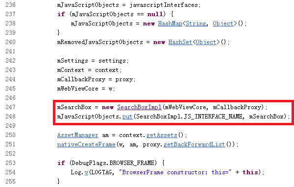
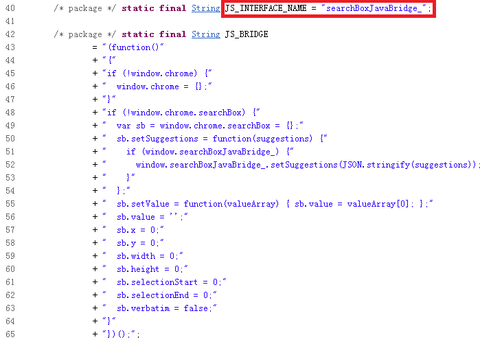
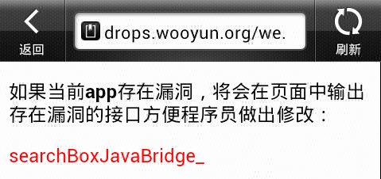

- 漏洞类型：远程执行
- 威胁等级：中
- 漏洞来源：Joshua J. Drak
- 影响版本： Android 4.3 Android 4.2 Android 4.1 Android 4.0
漏洞描述
在2014年二月，安全研究员Joshua J. Drak发现并公布了一个在Android WebView中可以被利用的Javascript bridge “searchBoxJavaBridge_”[1][2]， 在Android4.0 ~ Android4.3.1版本中，当BrowserFrame初始化的时候，会创建一个 android.webkit.SearchBoxImpl[3] 实例，并将此实例使用searchBoxJavaBridge_这个名字添加为JavaScript Object，而攻击者可以利用这个实例执行远程代码。而此漏洞的根源是CVE-2012-6636这个漏洞[4]。

图1. BrowserFrame.java 代码片段

图2. SearchBoxImpl.java 代码片段
测试方法
在APP中加载”检测页面“[5]，如果存在此漏洞则会有下图一样的检测结果。

图3. 检测结果页面
解决方案
从Android 4.4 版本开始，Google使用Chromium的项目的实现替换了之前单纯基于WebKit的WebView[4]，此问题从Android4.4 版本开始不存在。
参考资料
[1] http://cve.mitre.org/cgi-bin/cvename.cgi?name=CVE-2014-1939
[2] http://openwall.com/lists/oss-security/2014/02/11/2
[4] http://cve.mitre.org/cgi-bin/cvename.cgi?name=CVE-2012-6636
[5] http://drops.wooyun.org/webview.html
[6] http://blog.chromium.org/2013/11/introducing-chromium-powered-android.html